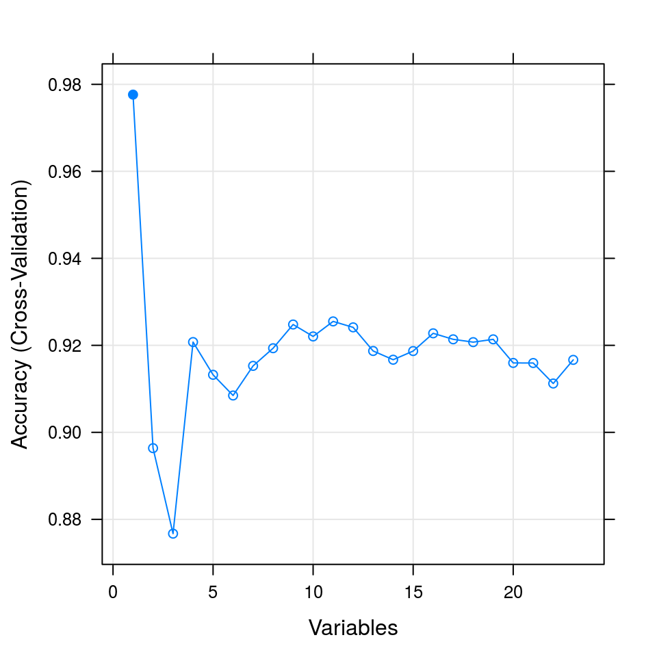
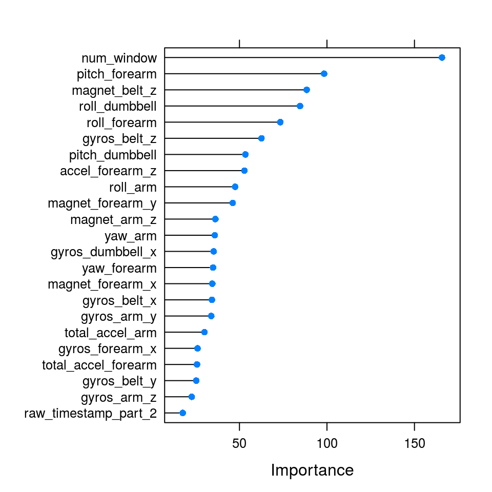

In this classification challenge we will use Random Forest, which has a great reputation in solving this type of problems.
As my PC has 8 available cores, we can profit from this by using parallel libraries together with other useful libs.
library(doParallel); library(parallel)
cores=detectCores()
clust = makeCluster(cores)
registerDoParallel(clust)
library(caret); library(kernlab); library(ISLR); library(RANN);
library(DMwR);library(MASS); library(randomForest); library(e1071)
train = read.csv(file="pml-training.csv", header = TRUE, sep = ',')
test = read.csv(file="pml-testing.csv", header = TRUE, sep = ',')
#In this report I will not execute these two commands for the sake of size
#summary(train)
#str(train)It can be easily seen that the training data is far from being clean and ready for analysis. Lots of missing data and error values. Let’s try to clean it steadily. Firstly, we should label as NAs empty values, NAs itself, and also error messages “#DIV/0!”.
#In this report I will not execute these two commands for the sake of size
#summary(test)
#str(test)The test set looks much cleaner. We will preserve its content.
Reloading training and testing sets.
train_v1 = read.csv(file="pml-training.csv", na.strings =c("NA", "", "#DIV/0!"), header = TRUE, sep = ',')
test_v1 = read.csv(file="pml-testing.csv", na.strings=c("NA", "", "#DIV/0!"), header = TRUE, sep = ',')
#Doing proper time formatting. Although, we will not use it in this project
train_v1$cvtd_timestamp = strptime(train_v1$cvtd_timestamp, "%d/%m/%Y %H:%M")
test_v1$cvtd_timestamp = strptime(test_v1$cvtd_timestamp, "%d/%m/%Y %H:%M")
train_v1$cvtd_timestamp = as.Date(train_v1$cvtd_timestamp)
test_v1$cvtd_timestamp = as.Date(test_v1$cvtd_timestamp)
#In this report I will not execute these four commands for the sake of size
#summary(train_v1)
#str(train_v1)
#summary(test_v1)
#str(test_v1)Our version v1 looks better now. Our dataset has a lot of features. Perhaps, not all of them are useful. We shall try to truncate our list of features. One of the ideas would be excluding those features, which have a near zero variation. Let’s identify them and remove
#Removing near zero variation. V2
nearzero <- nearZeroVar(train_v1, saveMetrics = TRUE)
#nearzero
train_v2 <- train_v1[, !nearzero$nzv]
#str(train_v2)Now we should get NAs sorted. Some of the columns are full of NAs and are of no use to us. I decided to remove those, which have a simple majority of NAs.
#Removing those with majorities of NA's. V3
NA_cleanup_train = sapply(colnames(train_v2), function(x) if(sum(is.na(train_v2[,x])) > 0.50*nrow(train_v2)) {return(TRUE)}else{return(FALSE)})
train_v3 = train_v2[,!NA_cleanup_train]
#In this report I will not execute these two commands for the sake of size
#str(train_v3)
#summary(train_v3)
#Checking if there any NA's left.
which(is.na(train_v3))## integer(0)For the remaining features we should find such, which are strongly correlated with each other. Obviously, we could play with PCA-method and reduce our features space. I will not do that. I will just exclude those, which correlation is exceeding 0.5. We should exclude from our consideration four variables: X, username, timing and classe. X is, in fact, very misguiding. If one uses it in a prediction model, it gives an accuracy of 100% for the training set. Most probably, it is due to the fact that all rows were collected sequently for every exercise class. Therefore, we should not use X, and also usernames and dates.
#Remove correlations. V4
features_corr <- findCorrelation(cor(train_v3[,-c(1,2,5,59)]), cutoff=0.5)
features_corr## [1] 13 4 12 25 7 6 39 11 14 5 32 40 38 41 33 42 50 24 1 37 55 26 28
## [24] 15 51 27 18 35 49 48 36 21names(train_v3[, -c(1,2,5,59)])[features_corr]## [1] "accel_belt_z" "roll_belt" "accel_belt_y"
## [4] "accel_arm_y" "total_accel_belt" "yaw_belt"
## [7] "accel_dumbbell_z" "accel_belt_x" "magnet_belt_x"
## [10] "pitch_belt" "yaw_dumbbell" "magnet_dumbbell_x"
## [13] "accel_dumbbell_y" "magnet_dumbbell_y" "total_accel_dumbbell"
## [16] "magnet_dumbbell_z" "accel_forearm_x" "accel_arm_x"
## [19] "raw_timestamp_part_1" "accel_dumbbell_x" "magnet_forearm_z"
## [22] "accel_arm_z" "magnet_arm_y" "magnet_belt_y"
## [25] "accel_forearm_y" "magnet_arm_x" "pitch_arm"
## [28] "gyros_dumbbell_y" "gyros_forearm_z" "gyros_forearm_y"
## [31] "gyros_dumbbell_z" "gyros_arm_x"train_v4 = train_v3[, -c(1,2,5,59)][,-features_corr]
train_v4$classe = train_v3[, 59]
str(train_v4)## 'data.frame': 19622 obs. of 24 variables:
## $ raw_timestamp_part_2: int 788290 808298 820366 120339 196328 304277 368296 440390 484323 484434 ...
## $ num_window : int 11 11 11 12 12 12 12 12 12 12 ...
## $ gyros_belt_x : num 0 0.02 0 0.02 0.02 0.02 0.02 0.02 0.02 0.03 ...
## $ gyros_belt_y : num 0 0 0 0 0.02 0 0 0 0 0 ...
## $ gyros_belt_z : num -0.02 -0.02 -0.02 -0.03 -0.02 -0.02 -0.02 -0.02 -0.02 0 ...
## $ magnet_belt_z : int -313 -311 -305 -310 -302 -312 -311 -313 -312 -308 ...
## $ roll_arm : num -128 -128 -128 -128 -128 -128 -128 -128 -128 -128 ...
## $ yaw_arm : num -161 -161 -161 -161 -161 -161 -161 -161 -161 -161 ...
## $ total_accel_arm : int 34 34 34 34 34 34 34 34 34 34 ...
## $ gyros_arm_y : num 0 -0.02 -0.02 -0.03 -0.03 -0.03 -0.03 -0.02 -0.03 -0.03 ...
## $ gyros_arm_z : num -0.02 -0.02 -0.02 0.02 0 0 0 0 -0.02 -0.02 ...
## $ magnet_arm_z : int 516 513 513 512 506 513 509 510 518 516 ...
## $ roll_dumbbell : num 13.1 13.1 12.9 13.4 13.4 ...
## $ pitch_dumbbell : num -70.5 -70.6 -70.3 -70.4 -70.4 ...
## $ gyros_dumbbell_x : num 0 0 0 0 0 0 0 0 0 0 ...
## $ roll_forearm : num 28.4 28.3 28.3 28.1 28 27.9 27.9 27.8 27.7 27.7 ...
## $ pitch_forearm : num -63.9 -63.9 -63.9 -63.9 -63.9 -63.9 -63.9 -63.8 -63.8 -63.8 ...
## $ yaw_forearm : num -153 -153 -152 -152 -152 -152 -152 -152 -152 -152 ...
## $ total_accel_forearm : int 36 36 36 36 36 36 36 36 36 36 ...
## $ gyros_forearm_x : num 0.03 0.02 0.03 0.02 0.02 0.02 0.02 0.02 0.03 0.02 ...
## $ accel_forearm_z : int -215 -216 -213 -214 -214 -215 -215 -213 -214 -215 ...
## $ magnet_forearm_x : int -17 -18 -18 -16 -17 -9 -18 -9 -16 -22 ...
## $ magnet_forearm_y : num 654 661 658 658 655 660 659 660 653 656 ...
## $ classe : Factor w/ 5 levels "A","B","C","D",..: 1 1 1 1 1 1 1 1 1 1 ...The training set is simply too large. At this stage we will try to gently truncate it without loss of significance. Sampling of 10% from our training set should be enough. This we will justify by assessing our accuracy. The training subset of 10% we will split into 75% for training and 25% for testing.
table(train_v4$classe)##
## A B C D E
## 5580 3797 3422 3216 3607#It is noteworthy that the classes are not skewed, which is good
#so, we don't need to pick selectively every class...just taking random 10%
reduced_training_set = createDataPartition(y=train_v4$classe, p=0.10, list = FALSE)
inTrain = createDataPartition(y=train_v4[reduced_training_set,]$classe, p=0.75, list = FALSE)
Train_v5 = train_v4[reduced_training_set,][inTrain,]
Test_v5 = train_v4[reduced_training_set,][-inTrain,]It is very helpful to see what features influence the accuracy. Let’s take a look at them.
#str(Train_v5)
control <- rfeControl(functions=rfFuncs, method="cv", number=10)
# run the RFE algorithm
results <- rfe(Train_v5[,-c(24)], Train_v5[,24], sizes=c(1:23), rfeControl=control)
# summarize the results
print(results)##
## Recursive feature selection
##
## Outer resampling method: Cross-Validated (10 fold)
##
## Resampling performance over subset size:
##
## Variables Accuracy Kappa AccuracySD KappaSD Selected
## 1 0.9776 0.9717 0.01110 0.01402 *
## 2 0.8964 0.8689 0.02785 0.03516
## 3 0.8767 0.8437 0.02674 0.03384
## 4 0.9208 0.8998 0.02340 0.02935
## 5 0.9132 0.8903 0.01417 0.01783
## 6 0.9085 0.8843 0.01846 0.02334
## 7 0.9153 0.8929 0.01421 0.01785
## 8 0.9193 0.8980 0.01758 0.02217
## 9 0.9248 0.9049 0.01300 0.01631
## 10 0.9220 0.9013 0.01657 0.02089
## 11 0.9255 0.9057 0.01960 0.02470
## 12 0.9241 0.9040 0.01738 0.02191
## 13 0.9187 0.8972 0.02474 0.03132
## 14 0.9167 0.8946 0.02080 0.02624
## 15 0.9187 0.8971 0.02170 0.02746
## 16 0.9228 0.9024 0.01976 0.02487
## 17 0.9214 0.9006 0.01911 0.02416
## 18 0.9207 0.8997 0.02285 0.02892
## 19 0.9214 0.9006 0.02043 0.02584
## 20 0.9160 0.8936 0.01913 0.02425
## 21 0.9159 0.8937 0.01970 0.02487
## 22 0.9112 0.8877 0.01989 0.02512
## 23 0.9167 0.8945 0.01753 0.02210
##
## The top 1 variables (out of 1):
## num_window# list the chosen features
predictors(results)## [1] "num_window"# plot the results
plot(results, type=c("g", "o"))
We will try here to compare TOP 7, TOP 10, and the full list of features(23)
control <- trainControl(method="cv", number=10, repeats=5)
#str(Train_v5)
model_RF_FULL = train(classe~., data=Train_v5, method="rf", preProcess="range", trControl=control, tuneGrid = expand.grid(.mtry = c(2:6)), n.tree=200, maxit=2000)
PREDICTION_FULL = predict(model_RF_FULL, newdata=Test_v5)
confusionMatrix(PREDICTION_FULL,Test_v5[,"classe"])## Confusion Matrix and Statistics
##
## Reference
## Prediction A B C D E
## A 137 5 0 2 0
## B 2 82 4 0 3
## C 0 3 81 10 0
## D 0 2 0 68 1
## E 0 3 0 0 86
##
## Overall Statistics
##
## Accuracy : 0.9284
## 95% CI : (0.9019, 0.9496)
## No Information Rate : 0.2843
## P-Value [Acc > NIR] : < 2.2e-16
##
## Kappa : 0.9093
## Mcnemar's Test P-Value : NA
##
## Statistics by Class:
##
## Class: A Class: B Class: C Class: D Class: E
## Sensitivity 0.9856 0.8632 0.9529 0.8500 0.9556
## Specificity 0.9800 0.9772 0.9678 0.9927 0.9925
## Pos Pred Value 0.9514 0.9011 0.8617 0.9577 0.9663
## Neg Pred Value 0.9942 0.9673 0.9899 0.9713 0.9900
## Prevalence 0.2843 0.1943 0.1738 0.1636 0.1840
## Detection Rate 0.2802 0.1677 0.1656 0.1391 0.1759
## Detection Prevalence 0.2945 0.1861 0.1922 0.1452 0.1820
## Balanced Accuracy 0.9828 0.9202 0.9604 0.9213 0.9740Let’s see the importance of features and try to select TOP 7 and TOP10. This will reduce our training set significantly.
importance <- varImp(model_RF_FULL, scale=FALSE)
# summarize importance
print(importance )## rf variable importance
##
## only 20 most important variables shown (out of 23)
##
## Overall
## num_window 165.71
## pitch_forearm 98.36
## magnet_belt_z 88.42
## roll_dumbbell 84.60
## roll_forearm 73.35
## gyros_belt_z 62.57
## pitch_dumbbell 53.40
## accel_forearm_z 52.84
## roll_arm 47.52
## magnet_forearm_y 46.16
## magnet_arm_z 36.28
## yaw_arm 35.89
## gyros_dumbbell_x 35.26
## yaw_forearm 34.93
## magnet_forearm_x 34.50
## gyros_belt_x 34.28
## gyros_arm_y 33.89
## total_accel_arm 30.03
## gyros_forearm_x 26.06
## total_accel_forearm 25.74plot(importance)
Let’s see how accurate they are. We will constract predictors based on TOP 7 and TOP 10 features.
TOP7_features = c("num_window","pitch_forearm","magnet_belt_z","roll_dumbbell","roll_forearm", "gyros_belt_z", "pitch_dumbbell", "accel_forearm_z", "classe")
TOP10_features = c("num_window","pitch_forearm","magnet_belt_z","roll_dumbbell","roll_forearm", "gyros_belt_z", "pitch_dumbbell", "accel_forearm_z","roll_arm", "magnet_forearm_y", "magnet_arm_z","classe")
model_RF_TOP7 = train(classe~., data=Train_v5[,TOP7_features], method="rf", preProcess="range", trControl=control, tuneGrid = expand.grid(.mtry = c(2:6)), n.tree=200, maxit=2000)
model_RF_TOP10 = train(classe~., data=Train_v5[,TOP10_features], method="rf", preProcess="range", trControl=control, tuneGrid = expand.grid(.mtry = c(2:6)), n.tree=200, maxit=2000)
#model_nnet_TOP7 = train(classe~., data=Train_v5[,TOP7_features], method="avNNet", preProcess="range", trControl=control, tuneLength=4, maxit=2000 )
#PREDICTION_nnet_TOP7 = predict(model_nnet_TOP7, newdata=Test_v5)
#confusionMatrix(PREDICTION_nnet_TOP7,Test_v5[,"classe"])
PREDICTION_TOP7 = predict(model_RF_TOP7, newdata=Test_v5)
confusionMatrix(PREDICTION_TOP7,Test_v5[,"classe"])## Confusion Matrix and Statistics
##
## Reference
## Prediction A B C D E
## A 134 5 0 2 0
## B 4 85 3 2 0
## C 0 2 81 1 0
## D 1 2 0 74 5
## E 0 1 1 1 85
##
## Overall Statistics
##
## Accuracy : 0.9387
## 95% CI : (0.9136, 0.9582)
## No Information Rate : 0.2843
## P-Value [Acc > NIR] : < 2.2e-16
##
## Kappa : 0.9224
## Mcnemar's Test P-Value : NA
##
## Statistics by Class:
##
## Class: A Class: B Class: C Class: D Class: E
## Sensitivity 0.9640 0.8947 0.9529 0.9250 0.9444
## Specificity 0.9800 0.9772 0.9926 0.9804 0.9925
## Pos Pred Value 0.9504 0.9043 0.9643 0.9024 0.9659
## Neg Pred Value 0.9856 0.9747 0.9901 0.9853 0.9875
## Prevalence 0.2843 0.1943 0.1738 0.1636 0.1840
## Detection Rate 0.2740 0.1738 0.1656 0.1513 0.1738
## Detection Prevalence 0.2883 0.1922 0.1718 0.1677 0.1800
## Balanced Accuracy 0.9720 0.9359 0.9728 0.9527 0.9685PREDICTION_TOP10 = predict(model_RF_TOP10, newdata=Test_v5)
confusionMatrix(PREDICTION_TOP10,Test_v5[,"classe"])## Confusion Matrix and Statistics
##
## Reference
## Prediction A B C D E
## A 135 6 0 1 0
## B 4 82 5 1 0
## C 0 5 79 4 0
## D 0 2 0 72 3
## E 0 0 1 2 87
##
## Overall Statistics
##
## Accuracy : 0.9305
## 95% CI : (0.9042, 0.9514)
## No Information Rate : 0.2843
## P-Value [Acc > NIR] : < 2.2e-16
##
## Kappa : 0.912
## Mcnemar's Test P-Value : NA
##
## Statistics by Class:
##
## Class: A Class: B Class: C Class: D Class: E
## Sensitivity 0.9712 0.8632 0.9294 0.9000 0.9667
## Specificity 0.9800 0.9746 0.9777 0.9878 0.9925
## Pos Pred Value 0.9507 0.8913 0.8977 0.9351 0.9667
## Neg Pred Value 0.9885 0.9673 0.9850 0.9806 0.9925
## Prevalence 0.2843 0.1943 0.1738 0.1636 0.1840
## Detection Rate 0.2761 0.1677 0.1616 0.1472 0.1779
## Detection Prevalence 0.2904 0.1881 0.1800 0.1575 0.1840
## Balanced Accuracy 0.9756 0.9189 0.9536 0.9439 0.9796PREDICTION_FULL = predict(model_RF_FULL, newdata=Test_v5)
confusionMatrix(PREDICTION_FULL,Test_v5[,"classe"])## Confusion Matrix and Statistics
##
## Reference
## Prediction A B C D E
## A 132 6 0 1 0
## B 4 82 8 0 3
## C 0 6 73 3 1
## D 3 1 2 74 1
## E 0 0 2 2 85
##
## Overall Statistics
##
## Accuracy : 0.9121
## 95% CI : (0.8834, 0.9356)
## No Information Rate : 0.2843
## P-Value [Acc > NIR] : < 2.2e-16
##
## Kappa : 0.8888
## Mcnemar's Test P-Value : NA
##
## Statistics by Class:
##
## Class: A Class: B Class: C Class: D Class: E
## Sensitivity 0.9496 0.8632 0.8588 0.9250 0.9444
## Specificity 0.9800 0.9619 0.9752 0.9829 0.9900
## Pos Pred Value 0.9496 0.8454 0.8795 0.9136 0.9551
## Neg Pred Value 0.9800 0.9668 0.9704 0.9853 0.9875
## Prevalence 0.2843 0.1943 0.1738 0.1636 0.1840
## Detection Rate 0.2699 0.1677 0.1493 0.1513 0.1738
## Detection Prevalence 0.2843 0.1984 0.1697 0.1656 0.1820
## Balanced Accuracy 0.9648 0.9125 0.9170 0.9539 0.9672Accuracies for TOP7, TOP10 and TOP FULL are between 94 and 91%. It looks not bad, let’s see whether we can improve it. Before doing that, let’s see whether all three models do similar prediction for our test set.
PREDICTION_COURSE_TOP7 = predict(model_RF_TOP7, newdata=test_v1)
PREDICTION_COURSE_TOP10 = predict(model_RF_TOP10, newdata=test_v1)
PREDICTION_COURSE_FULL = predict(model_RF_FULL, newdata=test_v1)comparing TOP7 to TOP10 and TOP10 to TOP FULL
table(PREDICTION_COURSE_TOP7, PREDICTION_COURSE_TOP10)## PREDICTION_COURSE_TOP10
## PREDICTION_COURSE_TOP7 A B C D E
## A 7 0 0 0 0
## B 0 8 0 0 0
## C 0 0 1 0 0
## D 0 0 0 1 0
## E 0 0 0 0 3table(PREDICTION_COURSE_TOP10, PREDICTION_COURSE_FULL)## PREDICTION_COURSE_FULL
## PREDICTION_COURSE_TOP10 A B C D E
## A 7 0 0 0 0
## B 0 8 0 0 0
## C 0 0 1 0 0
## D 0 0 0 1 0
## E 0 0 0 0 3According to what we see, we can rely on the model TOP7 as it does identical prediction as TOP10 and TOP FULL.
Thus, we should take a larger training set with less features (TOP 7). Therefore, training on more data with less features(TOP 7) is the best solution. This time we will sample 25% of the training set. It will improve our predictor and its accuracy
reduced_training_set_v2 = createDataPartition(y=train_v4$classe, p=0.25, list = FALSE)
inTrain = createDataPartition(y=train_v4[reduced_training_set_v2,]$classe, p=0.75, list = FALSE)
Train_v666 = train_v4[reduced_training_set_v2,][inTrain,]
Test_v666 = train_v4[reduced_training_set_v2,][-inTrain,]
model_RF_TOP7_v2 = train(classe~., data=Train_v666[,TOP7_features], method="rf", preProcess="range", trControl=control, tuneGrid = expand.grid(.mtry = c(2:6)), n.tree=200, maxit=2000)
PREDICTION_TOP7_v2 = predict(model_RF_TOP7_v2, newdata=Test_v666)
confusionMatrix(PREDICTION_TOP7_v2,Test_v666[,"classe"])## Confusion Matrix and Statistics
##
## Reference
## Prediction A B C D E
## A 342 1 0 0 0
## B 3 229 0 3 0
## C 0 5 212 5 0
## D 3 2 2 191 6
## E 0 0 0 2 219
##
## Overall Statistics
##
## Accuracy : 0.9739
## 95% CI : (0.9633, 0.9821)
## No Information Rate : 0.2841
## P-Value [Acc > NIR] : < 2.2e-16
##
## Kappa : 0.967
## Mcnemar's Test P-Value : NA
##
## Statistics by Class:
##
## Class: A Class: B Class: C Class: D Class: E
## Sensitivity 0.9828 0.9662 0.9907 0.9502 0.9733
## Specificity 0.9989 0.9939 0.9901 0.9873 0.9980
## Pos Pred Value 0.9971 0.9745 0.9550 0.9363 0.9910
## Neg Pred Value 0.9932 0.9919 0.9980 0.9902 0.9940
## Prevalence 0.2841 0.1935 0.1747 0.1641 0.1837
## Detection Rate 0.2792 0.1869 0.1731 0.1559 0.1788
## Detection Prevalence 0.2800 0.1918 0.1812 0.1665 0.1804
## Balanced Accuracy 0.9908 0.9801 0.9904 0.9688 0.9857PREDICTION_COURSE_TOP7_v2 = predict(model_RF_TOP7_v2, newdata=test_v1)
table(PREDICTION_COURSE_TOP7_v2, PREDICTION_COURSE_FULL)## PREDICTION_COURSE_FULL
## PREDICTION_COURSE_TOP7_v2 A B C D E
## A 7 0 0 0 0
## B 1 7 0 0 0
## C 0 0 1 0 0
## D 0 0 0 1 0
## E 0 0 0 0 3PREDICTION_COURSE_TOP7_v2## [1] B A B A A E D B A A B C B A E E A B B B
## Levels: A B C D EThis table shows that our prediction didn’t change since the moment when we used only 10% of the training set. However, using 25% of the training set, we have achieved 97% of accuracy on the validation set. This is a very good result! And the last line shows our final prediction, which has been confirmed by quiz.